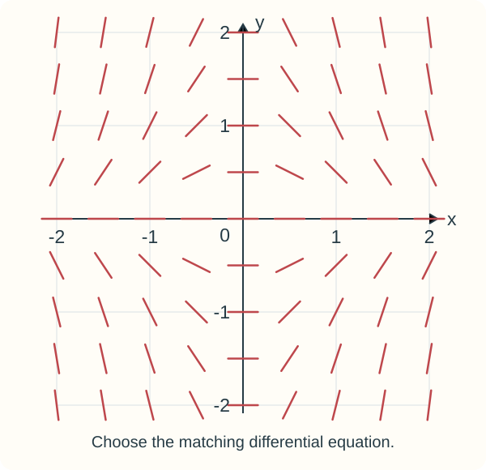
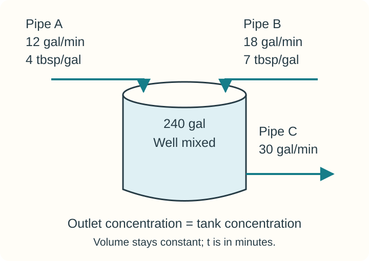

Course practice / Batch 20 / 2026-10-15 PDT
MTH 256
微分方程：Week 3-2 作业同型训练
Week 3-2 homework patterns: models and variety pack · Wk 3-2：方向场识别、变体积混合建模、连续取款、冷却、平方阻力、双流入混合、阈值与 Gompertz 模型判断、衰变建模
Identify the equation from its direction field
Which differential equation produces the direction field shown? Both x and y are dimensionless. Choose one answer.
- \(\displaystyle \frac{dy}{dx}=-2x^2y\)
- \(\displaystyle \frac{dy}{dx}=-2xy^2\)
- \(\displaystyle \frac{dy}{dx}=-2x^2y^2\)
- \(\displaystyle \frac{dy}{dx}=-2xy\)

中文提示（不含解答）
观察斜率为零的位置，再比较不同象限中短线段的正负与陡缓。只需选择一个方程。
Model a tank that is losing volume
A tank initially contains 42 kg of salt dissolved in 840 L of solution. Pure water enters at 7 L/min. The solution is kept well mixed and drains at 10 L/min. Let y(t) be the amount of salt, in kg, after t minutes. Use the model only while liquid remains in the tank.
Write the differential equation and initial condition for this situation.
\(\displaystyle \frac{dy}{dt}=\) __________
\(y(0)=\) __________
中文提示（不含解答）
纯水流入不会带入盐；流出盐速率使用当时的盐浓度，且体积随流入与流出之差变化。只需写出方程与初值。
A separable initial-value problem in cubic form
Solve the differential equation \[xy^2\frac{dy}{dx}=2+3x\] using the initial condition \(y(1)=4\). Express \(y^3\) in terms of x. Both variables are dimensionless; use the positive-x solution interval containing x = 1.
\(y^3=\) __________
中文提示（不含解答）
将含 y 的因子与 dy 放在一侧，含 x 的项与 dx 放在另一侧；积分后用初值确定常数。按题目要求保留 y³ 的形式。
An account with continuous withdrawals
Suppose you deposit $12,800 into a hypothetical savings account earning 4% annual interest compounded continuously. You withdraw $1,100 per year continuously. Let \(A(t)\) be the balance, in dollars, t years after the deposit. The rates stay constant, and the model is used until the balance first reaches zero.
- Write the differential-equation model for the rate of change of the balance and state the initial condition.
- Solve the initial-value problem to find \(A(t)\).
- When will the money run out? Give t in years.
中文提示（不含解答）
余额的变化率等于连续利息收入减去连续取款；用初始存款确定常数，再令余额为零。
Cooling to a target temperature
Newton’s law of cooling states that \[\frac{dT}{dt}=k(T-T_a),\] where \(T(t)\) is the object’s temperature, \(T_a\) is the constant surrounding temperature, and k is a constant of proportionality.
A cup of coffee starts at 194 °F in a room held at 68 °F. After 9 minutes, its temperature is 176 °F. How many minutes after the start will the coffee reach 149 °F? Assume the same model applies throughout. Include at least two decimal places in your answer.
中文提示（不含解答）
先用九分钟时的观测值确定比例常数，再求从最初时刻到目标温度的总时间。
Falling with resistance proportional to speed squared
An object of mass 45 kg is given an initial downward velocity of −6 m/s in a medium that exerts a resistive force opposite to the direction of motion. The magnitude of this force is proportional to the square of the speed. The resistance is 18 N when the velocity is −3 m/s. Use \(g=10\ \mathrm{m/s^2}\), take upward as positive, and let t be time in seconds, with \(t\ge0\). Let \(v(t)\) be velocity in m/s and \(a=dv/dt\) be acceleration in m/s².
- Write a differential equation for the motion in terms of velocity v and acceleration a.
- Find the velocity \(v(t)\).
- Prepare a document showing your work for parts (a) and (b), and include a computer-generated graph of the solution.
- State and interpret the end behavior of the solution found in part (b).
中文提示（不含解答）
先用已知速度下的阻力大小求比例系数；重力与阻力的方向要按向上为正统一处理。文档中须包含计算机生成的解曲线。
Sugar entering through two pipes
A vat contains 240 gallons of sugar water; its volume remains constant. The diagram shows three pipes.
- Pipe A brings in sugar water containing 4 tablespoons of sugar per gallon at 12 gallons/minute.
- Pipe B brings in sugar water containing 7 tablespoons of sugar per gallon at 18 gallons/minute.
- The liquid in the vat is kept well mixed.
- Pipe C carries out the mixed solution at 30 gallons/minute.
Let \(S(t)\) be the number of tablespoons of sugar in the vat at time t, in minutes.
- Write the differential-equation model for the rate of change of sugar in the vat.
- Solve the differential equation for \(S(t)\). Write the family below the equilibrium amount using an arbitrary constant K, with \(K>0\).
- Suppose there are 36 tablespoons of sugar in the vat at t = 0. How many tablespoons are present 3 minutes later?

中文提示（不含解答）
将两条流入管各自带入的糖量相加，再减去流出管带走的糖量。流出浓度等于当时的糖量除以固定体积。
Fastest growth in a threshold model
Answer True or False.
For the threshold equation \[\frac{dP}{dt}=0.12P\left(1-\frac{P}{940}\right)\left(1-\frac{260}{P}\right),\qquad P>0,\] the population grows fastest when it reaches 600 organisms.
Here t is in years, P is modeled continuously in organisms, the carrying capacity is 940 organisms, the threshold is 260 organisms, and 0.12 has units yr\(^{-1}\).
True / False
中文提示（不含解答）
这里比较的是种群总增长率 dP/dt 随种群数量 P 的变化，只需判断陈述真伪。
Fastest growth in a Gompertz model
Answer True or False.
For the Gompertz equation \[\frac{dP}{dt}=0.14\ln\left(\frac{2100}{P}\right)P,\qquad P>0,\] the population grows fastest when it reaches 1050 organisms.
Here t is in days, P is modeled continuously in organisms, the carrying capacity is 2100 organisms, 0.14 has units day\(^{-1}\), and ln denotes the natural logarithm.
True / False
中文提示（不含解答）
把右侧看作 P 的函数，比较总增长率；不要把其他种群模型的结论直接套用。只需判断陈述真伪。
Translate radioactive decay into a differential equation
Write a differential equation that fits this situation: the rate of change of a radioactively decaying substance is −0.28 times the amount A remaining at time t.
Use A in grams and t in hours, so the proportionality constant has units h\(^{-1}\).
\(\displaystyle \frac{dA}{dt}=\) __________
中文提示（不含解答）
把“变化率”写成导数；衰减对应负的比例系数。只需写出微分方程。